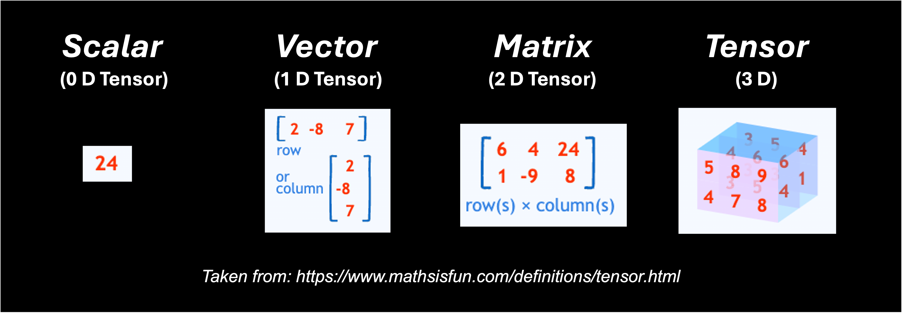

Using Llama_cpp_python to run LLMs#
Much like Tranformers, LLaMa.cpp (or LLaMa C++) is a tool or framework to run an open-source LLM. We’ll demonstrate how to use the Python wrapper for it: llama_cpp_python.
Llama_cpp_python vs. Transformers#
Both Transformers and llama_cpp_python are tools you can apply to run open-source LLMs. Since LLaMa.cpp is also derived from the Transformer architecture, they follow similar processing steps. However, LLaMa.cpp applies some improvements that make it slightly more efficient and easier to run. The diagram below details the difference between the Llama and Transformer architecture.

The upshot of these tweaks are:
Better training: LLaMA uses a technique called pre-normalization to improves training stability by adjusting the data before processing it. Consider this akin to tuning up your guitar before each song to ensure the strings are at the right tension for consistent sound.
Faster calculations: LLaMA utilizes the SwiGLU activation function to help the model compute information faster. This is like using a pick with a special grip that makes it easier and faster to strum chords or play single notes.
Simpler positioning: LLaMA incorporates rotary embeddings which track word order in a more efficient way compared to absolute positional embeddings. Imagine that the frets at different positions of your guitar neck were color-coded instead of just metal bars. This makes it quicker to find the right notes on the fretboard.
Basic Workflow for llama_cpp_python#
In addition to the architectural improvements, llama_cpp_python is simpler to use than the python transformers library. Unlike transformers, you don’t need to be familiar with libraries like PyTorch or the intricacies of token conversion and decoding. Llama_cpp_python takes care of these technical details under the hood, allowing you to focus on feeding it text and getting results directly.
1. Load the model: Load the model in a GGUF format.
2. Send your prompt: Either feed it a plain text prompt or place the query in the appropriate model prompt syntax.
3. Get text response: Retrieve the text response with no decoding necessary.
Quantized Models - What is GGUF?#
In order to run an LLM, llama_cpp_python requires the model’s parameters – the building blocks of its knowledge. These are stored as complex, multidimensional arrays of values called tensors. In machine learning a tensor shows the values of nodes in a neural network.

The data type chosen for these tensors (like Float64, Float16, or even integers) impacts both accuracy and memory usage. You can think of the data type as the number of “digits” used to represent the information in memory:
Higher precision data types (e.g., Float64): Offer greater accuracy and stability during training, but require more memory and computational resources.
Lower precision data types (e.g., Float16): Reduce memory requirements and potentially speed up computations, but might introduce slight accuracy trade-offs.
Llama_cpp_python simplifies how to store model inputs by using a single, compressed format called GGUF (GPT-Generated Unified Format). GGUF can leverage a technique called quantization to further optimize storage. Quantization essentially “compresses” the data by representing the model weights using less precise data types. The image below demonstrates how quantization works:

In practice quantization can entail moving from a float 16 (FP16) data type to an integer 4 (INT4) data type.
By using quantization, llama_cpp_python makes it easier to work with LLMs on devices with limited memory or processing power. Here you see how quantizaton reduces the size of the llama2 models you can call. This makes it feasible to run these models on a single GPU or even CPUs.
While you can create your own GGUF files for most models, it’s also possible to download these files from Hugging Face. The GGUF files for llama2 can be found here: https://huggingface.co/TheBloke/Llama-2-7B-GGUF.
Tradeoffs between Tools#
Even though the architecture and basic steps suggest that llama_cpp_python might be easier to run and more efficient than the python transformer library, the improvements come with some tradeoffs.
Inference only: llama_cpp_python is primarily for running inference (using the model to generate text). You can’t fine-tune the model (further train it on a specific task) or use techniques like RAG (using a retrieval model to improve factual accuracy) through llama_cpp_python. Transformers offer more comprehensive functionality for model development and experimentation.
Slower for small models: llama_cpp_python might be slower for very small GGUF files. The overhead of using llama_cpp_python might outweigh the benefits for tiny models. Transformers might be a better choice in such cases.
Precision loss: Quantization (converting complex numbers to simpler formats) does introduce some loss in precision. This might be negligible for many tasks, but for applications requiring very high accuracy, transformers with full-precision computation could be preferable.
Choose Transformers for:
Fine-tuning models
Using RAG or other advanced techniques
Working with very small models
When high precision is crucial
Choose llama_cpp_python for:
Faster inference on large models
Deploying models on CPUs
Run Gemma model#
Here is some sample code to run a single prompt with the gemma 7B instruct model:
Python script
###########################################
# Gemma model example with llama_cpp_python
###########################################
# libraries
from llama_cpp import Llama
#########
# Inputs
#########
# model
model_path ="/kellogg/software/llama_cpp/model/gemma-7b-it.gguf"
# settings
context_size = 512
threads = 1
gpu_layers = -1
max_tokens_select = 1000
temperature_select: float=0
top_p_select: float=0.9
top_k_select: int=0
include_prompt = False
# Prompts
prompt = "What kind of pickups are on an ESP LTD Alexi Ripped?"
# Prompt Syntax (prompt written in gemma prompt syntax)
prompt_sytnax = "<start_of_turn>user" + prompt + "<end_of_turn>" + "<start_of_turn>model"
#####################
# LLaMa.cpp arguments
#####################
# load model
llm = Llama(
model_path=model_path, # The path to the model file
n_ctx=context_size, # The max sequence length to use - adjust based on your model's requirements
n_threads=threads, # The number of CPU threads to use
n_gpu_layers=gpu_layers # Set to 0 if you want to use CPU only and -1 if you want to use all available GPUs
)
# send prompt
response = llm(
prompt,
max_tokens=max_tokens_select,
temperature=temperature_select,
top_p=top_p_select,
top_k=top_k_select,
echo = include_prompt
)
##############
# Get Response
##############
response_text = response['choices'][0]['text']
print(response_text)
Breaking down the parameter options:
At the model load step:
model_pathis the path to the model file being used. Note that you can download this file from Hugging Face here: https://huggingface.co/google/gemma-7b-it/tree/mainn_ctxis the context window for the model; max number of tokens in the prompt; default is 512n_threadsis the number of the number of CPU threadsn_gpu_layersset to 0 if you want to use CPU only and -1 if you want to use all available GPUs
At the model output step:
promptis the input prompt for the model. Under the hood, the text is tokenized and passed to the modelmax_tokensis the maximum number of tokens to be generated in the model’s responsetemperaturethis value ranges from 0 to 1. The lower the value, the more deterministic the end result. A higher value leads to more randomness.top_pis used to control the diversity of the predictions, meaning that it selects the most probable tokens whose cumulative probability exceeds a given threshold. Starting from zero, a higher value increases the chance of finding a better output but requires additional computations.echospecifies a boolean used to determine whether the model includes the original prompt at the beginning (True) or does not include it (False).
For more information about these parameters and additional ones, please see: https://llama-cpp-python.readthedocs.io/en/latest/api-reference/.
You can find this file here: scripts/llama_cpp_python/gemma_ex.py. This file is saved as gemma_ex.py on KLC here:
/kelloggs/software/llama_cpp/code
SLURM script
You can run this file with the following SLURM script:
#!/bin/bash
#SBATCH --account=e32337
#SBATCH --partition gengpu
#SBATCH --nodes=1
#SBATCH --ntasks-per-node=1
#SBATCH --gres=gpu:a100:1
#SBATCH --time 0:30:00
#SBATCH --mem=40G
module purge
module use /kellogg/software/Modules/modulefiles
module load llama_cpp/2.38
python3 gemma_ex.py
You can find this file here: scripts/llama_cpp_python/gemma_ex.sh. This file is also saved to the same directory provided above as gemma_test.sh. You can run this shell script by making it an executable then launching it.
chmod +x gemma_ex.sh
./gemma_test.sh
Output:
ggml_init_cublas: no CUDA devices found, CUDA will be disabled
llama_model_loader: loaded meta data with 19 key-value pairs and 254 tensors from /model/gemma-7b-it.gguf (version GGUF V3 (latest))
llama_model_loader: Dumping metadata keys/values. Note: KV overrides do not apply in this output.
llama_model_loader: - kv 0: general.architecture str = gemma
llama_model_loader: - kv 1: general.name str = gemma-7b-it
llama_model_loader: - kv 2: gemma.context_length u32 = 8192
llama_model_loader: - kv 3: gemma.block_count u32 = 28
llama_model_loader: - kv 4: gemma.embedding_length u32 = 3072
llama_model_loader: - kv 5: gemma.feed_forward_length u32 = 24576
llama_model_loader: - kv 6: gemma.attention.head_count u32 = 16
llama_model_loader: - kv 7: gemma.attention.head_count_kv u32 = 16
llama_model_loader: - kv 8: gemma.attention.key_length u32 = 256
llama_model_loader: - kv 9: gemma.attention.value_length u32 = 256
llama_model_loader: - kv 10: gemma.attention.layer_norm_rms_epsilon f32 = 0.000001
llama_model_loader: - kv 11: tokenizer.ggml.model str = llama
llama_model_loader: - kv 12: tokenizer.ggml.bos_token_id u32 = 2
llama_model_loader: - kv 13: tokenizer.ggml.eos_token_id u32 = 1
llama_model_loader: - kv 14: tokenizer.ggml.padding_token_id u32 = 0
llama_model_loader: - kv 15: tokenizer.ggml.unknown_token_id u32 = 3
llama_model_loader: - kv 16: tokenizer.ggml.tokens arr[str,256128] = ["<pad>", "<eos>", "<bos>", "<unk>", ...
llama_model_loader: - kv 17: tokenizer.ggml.scores arr[f32,256128] = [0.000000, 0.000000, 0.000000, 0.0000...
llama_model_loader: - kv 18: tokenizer.ggml.token_type arr[i32,256128] = [3, 3, 3, 2, 1, 1, 1, 1, 1, 1, 1, 1, ...
llama_model_loader: - type f32: 254 tensors
llm_load_vocab: mismatch in special tokens definition ( 544/256128 vs 388/256128 ).
llm_load_print_meta: format = GGUF V3 (latest)
llm_load_print_meta: arch = gemma
llm_load_print_meta: vocab type = SPM
llm_load_print_meta: n_vocab = 256128
llm_load_print_meta: n_merges = 0
llm_load_print_meta: n_ctx_train = 8192
llm_load_print_meta: n_embd = 3072
llm_load_print_meta: n_head = 16
llm_load_print_meta: n_head_kv = 16
llm_load_print_meta: n_layer = 28
llm_load_print_meta: n_rot = 192
llm_load_print_meta: n_embd_head_k = 256
llm_load_print_meta: n_embd_head_v = 256
llm_load_print_meta: n_gqa = 1
llm_load_print_meta: n_embd_k_gqa = 4096
llm_load_print_meta: n_embd_v_gqa = 4096
llm_load_print_meta: f_norm_eps = 0.0e+00
llm_load_print_meta: f_norm_rms_eps = 1.0e-06
llm_load_print_meta: f_clamp_kqv = 0.0e+00
llm_load_print_meta: f_max_alibi_bias = 0.0e+00
llm_load_print_meta: n_ff = 24576
llm_load_print_meta: n_expert = 0
llm_load_print_meta: n_expert_used = 0
llm_load_print_meta: rope scaling = linear
llm_load_print_meta: freq_base_train = 10000.0
llm_load_print_meta: freq_scale_train = 1
llm_load_print_meta: n_yarn_orig_ctx = 8192
llm_load_print_meta: rope_finetuned = unknown
llm_load_print_meta: model type = 7B
llm_load_print_meta: model ftype = all F32 (guessed)
llm_load_print_meta: model params = 8.54 B
llm_load_print_meta: model size = 31.81 GiB (32.00 BPW)
llm_load_print_meta: general.name = gemma-7b-it
llm_load_print_meta: BOS token = 2 '<bos>'
llm_load_print_meta: EOS token = 1 '<eos>'
llm_load_print_meta: UNK token = 3 '<unk>'
llm_load_print_meta: PAD token = 0 '<pad>'
llm_load_print_meta: LF token = 227 '<0x0A>'
llm_load_tensors: ggml ctx size = 0.10 MiB
llm_load_tensors: offloading 28 repeating layers to GPU
llm_load_tensors: offloading non-repeating layers to GPU
llm_load_tensors: offloaded 29/29 layers to GPU
llm_load_tensors: CPU buffer size = 32570.17 MiB
............................................................................................
llama_new_context_with_model: n_ctx = 512
llama_new_context_with_model: freq_base = 10000.0
llama_new_context_with_model: freq_scale = 1
WARNING: failed to allocate 224.00 MB of pinned memory: no CUDA-capable device is detected
llama_kv_cache_init: CPU KV buffer size = 224.00 MiB
llama_new_context_with_model: KV self size = 224.00 MiB, K (f16): 112.00 MiB, V (f16): 112.00 MiB
WARNING: failed to allocate 8.01 MB of pinned memory: no CUDA-capable device is detected
llama_new_context_with_model: CPU input buffer size = 8.01 MiB
WARNING: failed to allocate 506.25 MB of pinned memory: no CUDA-capable device is detected
llama_new_context_with_model: CUDA_Host compute buffer size = 506.25 MiB
llama_new_context_with_model: graph splits (measure): 1
AVX = 1 | AVX_VNNI = 0 | AVX2 = 1 | AVX512 = 0 | AVX512_VBMI = 0 | AVX512_VNNI = 0 | FMA = 1 | NEON = 0 | ARM_FMA = 0 | F16C = 1 | FP16_VA = 0 | WASM_SIMD = 0 | BLAS = 1 | SSE3 = 1 | SSSE3 = 1 | VSX = 0 | MATMUL_INT8 = 0 |
Model metadata: {'tokenizer.ggml.unknown_token_id': '3', 'tokenizer.ggml.padding_token_id': '0', 'tokenizer.ggml.eos_token_id': '1', 'general.architecture': 'gemma', 'gemma.feed_forward_length': '24576', 'gemma.attention.head_count': '16', 'general.name': 'gemma-7b-it', 'gemma.context_length': '8192', 'gemma.block_count': '28', 'gemma.embedding_length': '3072', 'gemma.attention.head_count_kv': '16', 'gemma.attention.key_length': '256', 'tokenizer.ggml.model': 'llama', 'gemma.attention.value_length': '256', 'gemma.attention.layer_norm_rms_epsilon': '0.000001', 'tokenizer.ggml.bos_token_id': '2'}
llama_print_timings: load time = 1047.55 ms
llama_print_timings: sample time = 111.74 ms / 34 runs ( 3.29 ms per token, 304.29 tokens per second)
llama_print_timings: prompt eval time = 1047.37 ms / 15 tokens ( 69.82 ms per token, 14.32 tokens per second)
llama_print_timings: eval time = 136433.05 ms / 33 runs ( 4134.33 ms per token, 0.24 tokens per second)
llama_print_timings: total time = 138373.07 ms / 48 tokens
The Esp Ltd.AlexI Ripper has ceramic humbuckers with coil tapping capabilities, which give you a wide range from clean to overdrive tones and everything in between
Likewise, you can modify the python file to run multiple prompts. The example script below is saved as gemma_workflow.py in the same directory listed above. You can also find it here: scripts/llama_cpp_python/gemma_workflow.py.
######################################
# Gemma Workflow with llama_cpp_python
######################################
# libraries
from llama_cpp import Llama
import pandas as pd
import os
import time
#########
# Inputs
#########
# model
model_path = "/kellogg/software/llama_cpp/models/gemma-7b-it.gguf"
# prompts
prompts = ["What is the main idea of Guy Debord's Societe du Spectacle?",
"What kind of pickups are on an ESP LTD Alexi Ripped?",
"How does Allama Iqbal's concept of the khudi relate to Nietzsche's Ubermensch?"
]
# output
output_file = "/kellogg/software/llama_cpp/output/gemma_test.csv"
# settings
context_size = 512 # The max sequence length to use - adjust based on your model's requirements
threads = 1 # The number of CPU threads to use
gpu_layers = -1 # Set to 0 if you want to use CPU only and -1 if you want to use all available GPUs
max_tokens_select = 1000
temperature_select: float=0
top_p_select: float=0.9
top_k_select: int=0
include_prompt = False
############
# Functions
############
# get prompt response
def get_completion(llm, prompt, max_tokens_select, temperature_select, top_p_select, top_k_select, include_prompt):
try:
# send prompt
response = llm(
prompt,
max_tokens=max_tokens_select,
temperature=temperature_select,
top_p=top_p_select,
top_k=top_k_select,
echo = include_prompt)
# get response
response_text = response['choices'][0]['text']
return response_text
except Exception as e:
print(f"An error occurred: {str(e)}")
return None
# save results to a df
def save_results(prompt, response, run_time):
# create empty df
results_df = pd.DataFrame(columns=['prompt', 'response', 'run_time'])
# create df from current row
row_df = pd.DataFrame({
'prompt': [prompt],
'response': [response],
'run_time': [run_time]
})
# combine
results_df = pd.concat([results_df, row_df], ignore_index=True)
# return dataframe
return results_df
######
# RUN
######
def main():
llm = Llama(model_path=model_path,
n_ctx=context_size,
n_threads=threads,
n_gpu_layers=gpu_layers)
for p in prompts:
# run
start_time = time.time()
response = get_completion(llm, p, max_tokens_select, temperature_select, top_p_select, top_k_select, include_prompt)
run_time = time.time() - start_time
# print results
print("========================")
print(f"Prompt: {p}")
print(f"Response: {response}")
print(f"Run Time: {run_time}")
print("========================")
# save progress
results_df = save_results(p, response, run_time)
results_df.to_csv(output_file, index=False)
if __name__ == "__main__":
main()
Output:
.....
llama_print_timings: load time = 5117.72 ms
llama_print_timings: sample time = 910.97 ms / 320 runs ( 2.85 ms per token, 351.28 tokens per second)
llama_print_timings: prompt eval time = 5116.70 ms / 18 tokens ( 284.26 ms per token, 3.52 tokens per second)
llama_print_timings: eval time = 85380.73 ms / 319 runs ( 267.65 ms per token, 3.74 tokens per second)
llama_print_timings: total time = 96673.56 ms / 337 tokens
========================
Prompt: What is the main idea of Guy Debord's Societe du Spectacle?
Response:
The Society of Control (1973) argues that in advanced capitalist societies, social life itself has become a spectacle. This society rests on two pillars: control and simulation—the latter being more powerful than even economic power because it controls our perception as individuals as well as our understanding as collective beings.<br>
Guy debord argued against this view claiming instead for an understanding rooted firmly within historical materialism.<br>
Debord argued against seeing contemporary capitalism as primarily concerned with production for profit but rather with production for consumption.< He argued this shift was evident not only from changes to labor practices but also from changes to consumer behavior.<br>
Therefore his primary concern was not with individual perception but with collective behavior.< He argued this shift was evident not only from changes to labor practices but also from changes to consumer behavior.<br>
Run Time: 96.674813747406
========================
llama_print_timings: load time = 5117.72 ms
llama_print_timings: sample time = 107.74 ms / 34 runs ( 3.17 ms per token, 315.57 tokens per second)
llama_print_timings: prompt eval time = 1299.31 ms / 13 tokens ( 99.95 ms per token, 10.01 tokens per second)
llama_print_timings: eval time = 8821.49 ms / 33 runs ( 267.32 ms per token, 3.74 tokens per second)
llama_print_timings: total time = 10758.35 ms / 46 tokens
========================
Prompt: What kind of pickups are on an ESP LTD Alexi Ripped?
Response:
The Esp Ltd.AlexI Ripper has ceramic humbuckers with coil tapping capabilities, which give you a wide range from clean to overdrive tones and everything in between
Run Time: 10.760140419006348
========================
llama_print_timings: load time = 5268.39 ms
llama_print_timings: sample time = 1060.79 ms / 377 runs ( 2.81 ms per token, 355.40 tokens per second)
llama_print_timings: prompt eval time = 1910.34 ms / 20 tokens ( 95.52 ms per token, 10.47 tokens per second)
llama_print_timings: eval time = 99700.63 ms / 376 runs ( 265.16 ms per token, 3.77 tokens per second)
llama_print_timings: total time = 108664.66 ms / 396 tokens
========================
Prompt: How does Allama Iqbal's concept of the khudi relate to Nietzsche's Ubermensch?
Response:
Allama MuhammadIqbal and FriedrichNietzsche were two prominent philosophers who explored similar themes in their respective works. One such theme is that of self-cultivation, which they referred as Khudī (Urdu) or Übermenschen(German).
**Khüdî by Allaima IQBAL:**
In his poetry collection "The Secrets," Allaima IQBAL argued for a spiritual awakening through individual effort:
"Khüdî hai har insān ka apna," meaning "Selfhood" or "Individuality" for every human being."
He believed individuals should cultivate inner strength through moral development rather than material possessions or external validation .
**Übermenschen by NIETZSCHE:**
Friedrich NIETZSCHE proposed a different approach towards selffactualization: through overcoming limitations rather than conforming with societal norms:
"The Übermenschen... are those individuals whose spiritual strength has overcome all limitations."
He emphasized individual strength over conformity , urging humans not be afraid challenge existing structures .
**Comparison:**
Both concepts emphasize individual empowerment through spiritual awakening or overcoming limitations . However , there are some key differences between them:
* **Emphasis:**
- **IQBAL:** Focuses on moral development through individual effort
- **NIETZSCHE:** Emphasizes spiritual strength through overcoming limitations
* **Approach:**
- **IQBAL:** Advocates for spiritual awakening through moral development
- **NIETZSCHE:** Encourages overcoming limitations through individual strength
* **Cultural Context:**
- **IQBAL:** Rooted within South Asian cultural values
- **NIETZSCHE:** Developed within European philosophical tradition
**Conclusion:**
While both concepts share similarities , each philosopher offers a unique perspective on individual empowerment through spiritual awakening or overcoming limitations . IQBAL emphasizes moral development within a cultural context , while NIETZSCHE encourages individual strength beyond societal norms .
Run Time: 108.66637086868286
Run Mistral model#
Please see scripts/llama_cpp_python/misral_ex.py.
Note that you can download this file from Hugging Face here: https://huggingface.co/TheBloke/Mistral-7B-v0.1-GGUF
Run llama2 model#
Please see scripts/llama_cpp_python/llama2_ex.py.
Note that you can download this file from Hugging Face here: https://huggingface.co/TheBloke/Llama-2-7B-Chat-GGUF